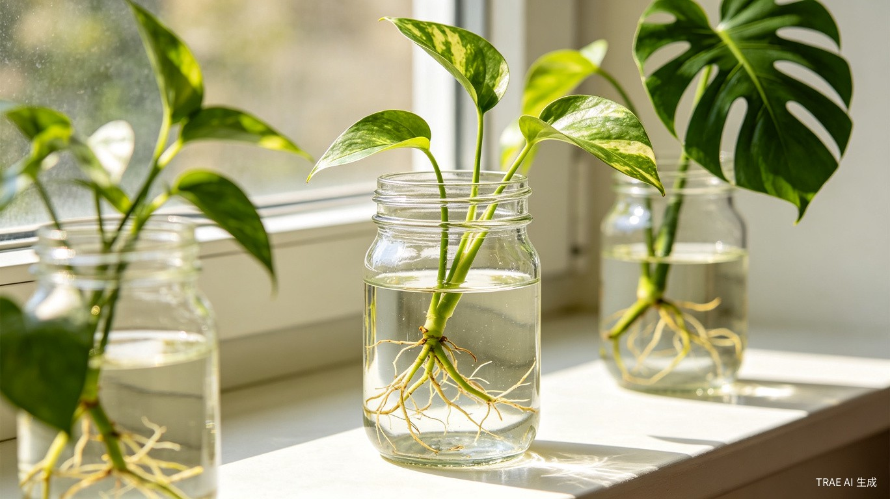
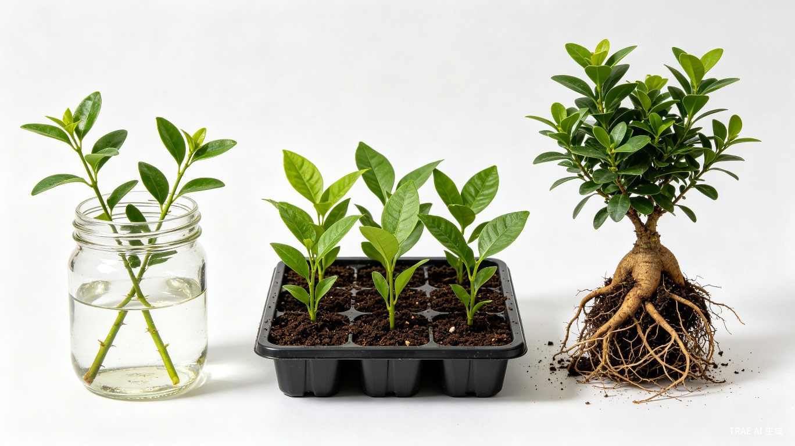

养植物最大的乐趣之一，就是看着自己亲手繁殖的小苗慢慢长大。更重要的是，学会繁殖意味着你可以用一盆植物变成十盆，送朋友、装饰家、甚至慢慢发展成一个小型植物园。今天这篇文章，我们就来系统学习两种最实用的植物繁殖方法——扦插和分株。
很多花友觉得植物繁殖是"高手才干的事"，其实不然。只要掌握几个关键要点，扦插和分株的成功率可以高达80%以上。本文将从原理到实操，一步步带你入门。
一、为什么要学植物繁殖？
在深入了解具体方法之前，先来认识一下植物繁殖的几个核心价值：
- 省钱：一盆绿萝20元，但如果学会扦插，剪几根枝条就能繁殖出5-10盆新绿萝，算下来每盆成本几乎为零。
- 应急备份：如果你心爱的植物出现烂根、病虫害等问题，提前繁殖的备份苗就是"救命稻草"——至少你还有一盆它的后代。
- 分享快乐：亲手繁殖的小苗送给朋友，比花店买的花更有心意。很多植物爱好者之间的友谊就是从"交换扦插苗"开始的。
- 保种延续：有些植物品种（如特定品种的多肉、锦化品种等）可能买不到或价格昂贵，通过繁殖可以永久保留这个品种。
- 成就感：看着一根光秃秃的枝条在水中冒出第一条白根，那种喜悦是买再多植物都无法替代的。
二、扦插繁殖：从一根枝条开始
扦插是植物繁殖中最常用、适用范围最广的方法。基本原理是利用植物细胞的"全能性"——植物身上的任何一个部位在适宜条件下都能分化出完整的新植株。

2.1 茎插法（最常用）
茎插法适用于绝大多数室内观叶植物，如绿萝、龟背竹、琴叶榕、橡皮树、常春藤等。操作步骤如下：
- 选择母株：选择健康、无病虫害的母株。最好在生长旺季（春夏季）进行，此时植物生命力最强。
- 剪取插穗：用消毒过的剪刀，在茎节下方约0.5厘米处斜剪。每段插穗保留2-3个茎节，长度约8-15厘米，保留顶部1-2片叶子，其余叶片摘除。
- 处理切口：将插穗底部在阴凉通风处晾干1-2小时（多肉植物需晾2-3天），待切口愈合后再进行扦插，可有效防止腐烂。
- 选择介质：水插使用清水（晾过的自来水）；土插使用疏松透气的介质，推荐蛭石+珍珠岩+泥炭土（1:1:1）混合。
- 插入介质：将插穗底部1-2个茎节埋入介质中，轻轻压实。土插后浇一次透水，之后保持介质微湿。
- 养护等待：放在明亮散射光处，避免阳光直射。保持环境温度20-28度，湿度60%以上。大部分植物2-4周生根。
生根加速秘诀：在插穗底部蘸取少量生根粉（吲哚丁酸），可显著提高生根速度与成功率。如果没有生根粉，用柳树枝泡水24小时得到的"柳枝水"也含有天然生根激素，效果不错。
2.2 叶插法（多肉植物专属）
叶插是多肉植物繁殖的独特方式。一片叶子就能长出一棵完整的新多肉，堪称植物界的"克隆术"。
操作要点：
- 选择饱满健康的叶片，左右轻轻扭动取下，确保叶片基部完整（带生长点）
- 将叶片平放在微微湿润的土面上，不要埋入土中
- 放在明亮散射光处，不要浇水——叶片自带的水分足够支撑到生根
- 约2-3周后，叶片基部会长出粉色小根和迷你芽点
- 待小芽长到1-2厘米时，可以开始少量喷雾补水
- 母叶会逐渐干瘪，这是正常现象——它在把养分输送给新生命
2.3 水插 vs 土插：如何选择？
水插和土插各有优劣，以下是详细对比：
| 对比维度 | 水插法 | 土插法 |
|---|---|---|
| 操作难度 | 简单，新手友好 | 中等，需注意湿度控制 |
| 生根速度 | 较快，肉眼可见根的生长 | 稍慢，但根系更健壮 |
| 观察乐趣 | 高，可清晰看到生根全过程 | 低，无法直接观察根系 |
| 转土适应 | 水生根转土培需要适应期，有缓苗风险 | 直接土培，无需转盆，成活率更高 |
| 换水频率 | 每2-3天换一次清水，防止细菌滋生 | 无需换水，但需保持介质微湿 |
| 适合植物 | 绿萝、龟背竹、富贵竹、吊兰、常春藤等 | 多肉、琴叶榕、橡皮树、月季、天竺葵等 |
| 最佳季节 | 春、夏、初秋（水温20-28度） | 春、秋季（气温18-25度） |
三、分株繁殖：一盆变多盆的最快方式
分株是将一株已经长成丛生状的植物，按照自然分蘖点分成2-3个独立植株的方法。相比扦插，分株的成活率更高（接近100%），而且新植株马上就有完整的根系，无需等待生根。
分株操作步骤
1. 脱盆：提前2-3天停止浇水，让盆土稍微干燥便于操作。将植物连同土团整体从花盆中取出。
2. 去土：轻轻抖掉根部的旧土，用手指或水流冲掉附着在根上的泥土，露出根系的自然分蘖结构。
3. 分株：找到植株的自然分蘖点（根系自然分开的位置），用手轻轻掰开。如果根系纠缠太紧，可以用消毒过的剪刀剪开，确保每份都有足够的根和茎叶。
4. 修剪：剪掉老根、烂根和过长的根系，保留健康的新根。同时剪掉发黄、受损的叶片，减少水分蒸发。
5. 上盆：每份分株单独上盆，使用新配的透气营养土。上盆后浇透一次定根水，放在阴凉通风处缓苗3-5天。
6. 缓苗：缓苗期间不要施肥，避免阳光直射。待新叶开始生长后，逐步恢复正常养护。
适合分株的植物：虎皮兰、吊兰、和平百合（白掌）、金钱树、兰花（蝴蝶兰、文心兰）、蕨类植物、竹芋类、椒草类等。这些植物都有一个共同特点——容易长侧芽或形成丛生状。
四、三种繁殖方法全方位对比
除了扦插和分株，还有播种繁殖。以下是三种方法的全面对比，帮你选择最适合自己的方式：
| 对比维度 | 扦插繁殖 | 分株繁殖 | 播种繁殖 |
|---|---|---|---|
| 难度 | 中等 | 简单 | 较高 |
| 成活率 | 60%-90% | 95%以上 | 30%-70% |
| 获得新植株时间 | 2-4周生根，2-3个月成苗 | 即刻获得完整植株 | 1-4周发芽，数月到数年成苗 |
| 需要的工具 | 剪刀、容器、介质 | 手套、剪刀、新花盆 | 种子、育苗盘、育苗土 |
| 最佳季节 | 春、夏季 | 春、秋季 | 春季（多数植物） |
| 适合人群 | 有一定养护经验的花友 | 新手友好 | 有耐心、想挑战的花友 |
| 代表植物 | 绿萝、龟背竹、多肉、琴叶榕 | 虎皮兰、吊兰、和平百合、兰花 | 多肉、仙人掌、草本花卉 |
五、新手友好：10种最容易繁殖的植物
如果你刚开始学习植物繁殖，建议从以下这些"几乎不可能失败"的植物入手：
| 植物名称 | 推荐繁殖方法 | 生根时间 | 成功率 | 特别提示 |
|---|---|---|---|---|
| 绿萝 | 水插 / 土插 | 7-14天 | 95%+ | 最推荐新手入门，几乎零失败 |
| 吊兰 | 分株 / 走茎扦插 | 即刻成苗 | 98%+ | 走茎上的小吊兰剪下即种 |
| 虎皮兰 | 分株 / 叶插 | 分株即刻；叶插4-8周 | 分株95%+；叶插70% | 叶插注意方向，倒插不生根 |
| 龟背竹 | 水插 / 土插 | 2-4周 | 85%+ | 选带气生根的茎段最佳 |
| 多肉（景天科） | 叶插 / 枝插 | 2-4周出芽 | 80%+ | 叶片需完整取下，晾干再插 |
| 常春藤 | 水插 / 土插 | 10-20天 | 90%+ | 极易生根，一根枝条可剪多段 |
| 富贵竹 | 水插 | 2-4周 | 90%+ | 水插即可，切口斜剪增大吸水面积 |
| 和平百合（白掌） | 分株 | 即刻成苗 | 95%+ | 春秋分株，每份保留3-4片叶 |
| 金钱树 | 分株 / 叶插 | 分株即刻；叶插6-10周 | 分株95%+；叶插60% | 叶插需耐心，会先长块茎再长叶 |
| 网纹草 | 土插 | 2-3周 | 85%+ | 保持高湿度，可用透明罩保湿 |
六、常见问题与避坑指南
问题一：水插枝条底部发黑腐烂
原因：细菌感染或换水不勤。水中细菌滋生会导致切口腐烂。解决方法：剪掉腐烂部分，重新晾干切口，换新鲜清水，之后每2天换一次水。可以在水中加一小块活性炭抑制细菌。
问题二：土插叶片发黄、萎蔫
原因：通常是水分蒸发大于根系吸水能力——还没长根，叶子水分却一直在蒸发。解决方法：剪掉一半叶片面积（大叶剪半），减少蒸腾；或者用透明塑料袋罩住花盆，创造高湿度环境，每天打开通风15分钟。
问题三：分株后植物萎蔫不振
原因：分株时根系损伤过大，或者分株后直接晒太阳。解决方法：分株后放在阴凉通风处缓苗至少5-7天，不要施肥，保持盆土微湿即可。待新叶开始生长后再恢复正常养护。
问题四：叶插多肉只长根不长芽
原因：叶片生长点受损或环境不适宜。解决方法：将叶片移到有散射光的位置（光照能刺激芽点分化），同时可以在土面喷少量水增加湿度。有些品种叶插需要更长的时间，耐心等待即可。
问题五：水插转土培后植物萎蔫
原因：水生根系与土生根系结构不同，水生根转到土壤中需要适应期。解决方法：水生根长到3-5厘米时转土培最佳（太短不耐旱，太长难适应）。转土后保持土壤湿润（比正常浇水稍湿），放在阴凉处缓苗1-2周，逐步增加光照。
黄金法则：缓苗期三不原则
不管是扦插还是分株，新植株上盆后的前两周是"缓苗期"。记住这三点：不暴晒（散射光即可）、不施肥（新根承受不了肥力）、不频繁浇水（微湿即可，不要积水）。熬过缓苗期，你的新植物就稳了。
七、总结：繁殖其实很简单
植物繁殖并不是什么高深的技艺，而是每个植物爱好者都可以掌握的实用技能。回顾一下核心要点：
- 扦插首选水插法：新手从水插起步，绿萝、龟背竹、常春藤都是绝佳选择，看得见的生根过程让你信心倍增。
- 分株是最快的方式：如果你的植物已经长成满满一盆，分株是最高效的繁殖方式，即刻拥有新植株。
- 季节选择很重要：春秋两季是繁殖的黄金窗口，温度适宜、植物生命力旺盛，成功率最高。
- 消毒是关键：剪刀消毒、切口晾干、介质干净——这三步决定了繁殖成败的80%。
- 缓苗期要有耐心：新植株需要时间适应新环境，不要心急，给它2-3周的适应期。
- 从简单植物开始：绿萝、吊兰、虎皮兰是最推荐的新手入门植物，几乎零失败。
最后想说的是，植物繁殖真正的秘诀不是技术，而是耐心和观察。每一根枝条、每一片叶子都蕴含着生命的潜力，你只需要给它合适的环境和足够的时间，它自然会给你惊喜。现在就去剪一根绿萝枝条试试吧！